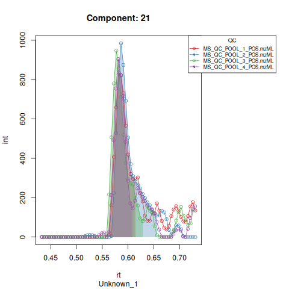

Case study: targeted metabolite detection using TARDIS in cardiovascular disease
Pablo Vangeenderhuysen
2025-10-23
case_study.rmdIntroduction
TARDIS offers an easy and straightforward way to
automatically calculate area under the peak, max intensity and various
quality metrics for targeted chemical compounds in LC-MS data. It makes
use of an established retention time correction algorithm from the
xcms package and loads MS data as Spectra
objects so it’s easily integrated with other tools of the
Rformassspectrometry initiative.
See README for installation instructions.
In this vignette, a case study on publicly available biological data is described. We presume that we discovered a list of important metabolite biomarkers for cardiovascular disease (CVD), which we would like to validate in this dataset.
Dataset
We use the MetaboLights dataset MTBLS8735, an example untargeted metabolomics dataset tailored to quantify the small polar metabolome in human plasma samples and aimed to identify differences between individuals suffering from a cardiovascular disease (CVD) and healthy controls (CTR). The subset analyzed here includes data for three CVD patients, three CTR individuals, and four quality control (QC) samples. The QC samples, representing a pooled serum sample from a large cohort, were measured repeatedly throughout the experiment to monitor signal stability.
All samples were analyzed using ultra-high-performance liquid chromatography (UHPLC) (Agilent 1290; Agilent Technologies, Santa Clara, CA, USA) coupled to a Q-TOF mass spectrometer (TripleTOF 5600+; AB Sciex, Foster City, CA, USA). The chromatographic separation was based on hydrophilic interaction liquid chromatography (HILIC) and performed using an Acquity BEH amide, 100 x 2.1 mm column (Waters Corporation, Milford, MA, USA).
The list of internal standards: Alanine 13C315N (0.9 μg/mL), arginine 13C615N4 (1.8 μg/mL), aspartic acid 13C415N (1.3 μg/mL), cystine 13C615N2 (1.2 μg/mL), glutamic acid 13C515N (1.5 μg/mL), glycine 13C215N (0.8 μg/mL), histidine 13C615N3 (1.6 μg/mL), isoleucine 13C615N (1.3 μg/mL), leucine 13C615N (1.3 μg/mL), lysine 13C615N2 (1.5 μg/mL), methionine 13C515N (1.5 μg/mL), phenylalanine 13C915N (1.7 μg/mL), proline 13C515N (1.2 μg/mL), serine 13C315N (1.1 μg/mL), threonine 13C415N (1.2 μg/ mL), tyrosine 13C915N (1.8 μg/mL) and valine 13C515N (1.2 μg/mL).
For more details, we refer to the MetaboLights repository.
Loading data
The first step is creating a data.frame that describes
the metabolites of interest. In this case, this are the internal
standards and the 6 biomarkers of interest. Following columns at least
need to be present for each compound:
- A compound ID, a unique identifier
- A compound Name
- Theoretical or measured m/z
- Expected RT (in minutes)
- A column that indicates the polarity of the formed ion for that compound
Extra columns can be included in the file, but will be ignored by
TARDIS unless otherwise indicated.
An input file (either .xlsx or .csv) can be converted to a correct
data.frame using the createTargetList() function. Input
parameters needed are: the path to the file, the patterns for positive
and negative ionization, the polarity of interest, the columnn that
contains the ionization mode and the other columns of interest.
library(readxl)
input <- read.csv2("vignette_data/bio_targets.csv",sep = ",")
kableExtra::kable(head(input))| ID | name | abbreviation | formula | POS | NEG | RT | data_set | sample | operator | version | quality_NEG | quality_POS | mz | mzmin | mzmax | rtmin | rtmax | rt |
|---|---|---|---|---|---|---|---|---|---|---|---|---|---|---|---|---|---|---|
| 1 | Carnitine (D3) | carnitine_d3 | 164.124 | [M+H]+ | NA | 61 | 2019_11_matrix_effect | serum | Mar Garcia-Aloy | 2 | 3_bad | 2_medium | 165.131276 | 165.126276 | 165.136276 | 51 | 71 | 1.016666667 |
| 2 | Creatinine (N-Methhyl_D3) | creatinine_methyl_d3 | 116.0777 | [M+H]+ | [M-H]- | 126 | 2019_11_matrix_effect | serum | Mar Garcia-Aloy | 2 | 2_medium | 2_medium | 117.084976 | 117.079976 | 117.089976 | 116 | 136 | 2.1 |
| 3 | Glucose (6,6-D2) | glucose_d2 | 182.0759 | [M+Na]+ | [M+CHO2]- | 166 | 2019_11_matrix_effect | serum | Mar Garcia-Aloy | 2 | 1_good | 2_medium | 205.06512 | 205.06012 | 205.07012 | 156 | 176 | 2.766666667 |
| 4 | L-Alanine (13C3, 99%; 15N, 99%) | alanine_13C_15N | 93.0548 | [M+H]+ | [M-H]- | 167 | 2019_11_matrix_effect | serum | Mar Garcia-Aloy | 2 | 2_medium | 1_good | 94.062076 | 94.057076 | 94.067076 | 157 | 177 | 2.783333333 |
| 5 | L-Arginine HCl (13C6, 99%; 15N4, 99%) | arginine_13C_15N | 184.1199 | [M+H]+ | [M-H]- | 183 | 2019_11_matrix_effect | serum | Mar Garcia-Aloy | 2 | 0_perfect | 0_perfect | 185.127176 | 185.122176 | 185.132176 | 173 | 193 | 3.05 |
| 6 | L-Aspartic acid (13C4, 99%; 15N, 99%) | aspartic_13C_15N | 138.048 | [M+H]+ | [M-H]- | 179 | 2019_11_matrix_effect | serum | Mar Garcia-Aloy | 2 | 1_good | 1_good | 139.055276 | 139.050276 | 139.060276 | 169 | 189 | 2.983333333 |
The target data.frame is created using
createTargetList(). For more info on how to use the
function, check the help page: ?createTargetList
Our biomarkers are defined as:
library(TARDIS)
targets <- createTargetList("vignette_data/bio_targets.csv",
pos_pattern = "+",
neg_pattern = "-",
polarity = "positive",
ion_column = "POS",
columns_of_interest = c("ID", "name", "mz", "rt"))
kableExtra::kable(targets[21:26,])| ID | NAME | m/z | tr | |
|---|---|---|---|---|
| 21 | 21 | Unknown_1 | 182.0749 | 34.83789 |
| 22 | 22 | Caffeine | 195.0877 | 32.65668 |
| 23 | 23 | BENZYL METHYL SULFIDE | 161.0400 | 162.13668 |
| 24 | 24 | Anthranilic acid | 138.0547 | 148.39599 |
| 25 | 25 | Isoproturon | 229.1299 | 181.08828 |
| 26 | 26 | Unknown_2 | 560.3603 | 33.54917 |
Below we extract our dataset from the MetaboLigths database and load it as an MsExperiment object. For more information on how to load your data from the MetaboLights database, we refer to the MsIO vignette.
library(MsExperiment)
library(MsIO)
library(MsBackendMetaboLights)
param <- MetaboLightsParam(mtblsId = "MTBLS8735",
assayName = paste0("a_MTBLS8735_LC-MS_positive_",
"hilic_metabolite_profiling.txt"),
filePattern = ".mzML")
lcms1 <- readMsObject(MsExperiment(),
param,
keepOntology = FALSE,
keepProtocol = FALSE,
simplify = TRUE)
lcms1
#> Object of class MsExperiment
#> Spectra: MS1 (17210)
#> Experiment data: 10 sample(s)
#> Sample data links:
#> - spectra: 10 sample(s) to 17210 element(s).Simplifying the sampleData:
colnames(sampleData(lcms1)) <- c("sample_name", "spectraOrigin",
"metabolite_asssignment_file",
"source_name",
"organism",
"blood_sample_type",
"type", "age", "unit", "phenotype")
# Add "QC" to the phenotype of the QC samples
sampleData(lcms1)$phenotype[sampleData(lcms1)$sample_name == "POOL"] <- "QC"
sampleData(lcms1)$sample_name[sampleData(lcms1)$sample_name == "POOL" ] <- c("POOL1", "POOL2", "POOL3", "POOL4")
sampleData(lcms1)$type[sampleData(lcms1)$type == "pool"] <- "QC"
# Add injection index column
sampleData(lcms1)$injection_index <- seq_len(nrow(sampleData(lcms1)))
sampleData(lcms1)[, c("spectraOrigin",
"phenotype", "sample_name", "type",
"injection_index")] |>
kableExtra::kable(format = "pipe")| spectraOrigin | phenotype | sample_name | type | injection_index |
|---|---|---|---|---|
| FILES/MS_QC_POOL_1_POS.mzML | QC | POOL1 | QC | 1 |
| FILES/MS_A_POS.mzML | CVD | A | experimental sample | 2 |
| FILES/MS_B_POS.mzML | CTR | B | experimental sample | 3 |
| FILES/MS_QC_POOL_2_POS.mzML | QC | POOL2 | QC | 4 |
| FILES/MS_C_POS.mzML | CTR | C | experimental sample | 5 |
| FILES/MS_D_POS.mzML | CVD | D | experimental sample | 6 |
| FILES/MS_QC_POOL_3_POS.mzML | QC | POOL3 | QC | 7 |
| FILES/MS_E_POS.mzML | CTR | E | experimental sample | 8 |
| FILES/MS_F_POS.mzML | CVD | F | experimental sample | 9 |
| FILES/MS_QC_POOL_4_POS.mzML | QC | POOL4 | QC | 10 |
IMPORTANT! The sample type column (indicating the
QCs) has to be named type. and the column indicating the
file has to be named spectraOrigin.
Screening mode
First, we perform a screening step to check if our targets are visible within our m/z and RT windows.
We can run screening mode using the argument
screening_mode = TRUE in the tardisPeaks
function.
For more details on the inputs of the function, please read the help
page ?tardisPeaks
To limit the running time of this vignette, we limit the internal standard targets to five, which should be enough for good RT alignment, given their retention times span throughout most of the analysis. For more info on how to choose the right “housekeeping compounds” for RT alignment, we refer the reader to the xcms documentation.
- L-Cystine (13C6, 99%; 15N2, 99%)
- L-Methionine (13C5, 99%; 15N, 99%)
- L-Glutamic acid (13C5, 99%; 15N, 99%)
- L-Phenylalanine (13C9, 99%; 15N, 99%)
- L-Serine (13C3, 99%; 15N, 99%)
subset <- targets[c(17,14,7,8,15,21:26),]
results <- tardisPeaks( lcmsData = lcms1,
dbData = subset,
mass_range = NULL,
polarity = "positive",
output_directory = "vignette_data/output/case/screening/",
batch_positions = list(c(1,10)),
QC_pattern = "QC",
int_std_id = as.character(1:20),
screening_mode = TRUE)
#> Performing retention time correction using 5 peak groups.The resulting EICs are saved in the output folder and can be inspected.

Based on the EICs we can see that detection, RT alignment and integration of target peaks in QC runs were successful. However, the signal of component 26, a non-annotated biomarker, is of remarkably lower quality than the others. One pooled QC shows a high signal that is absent in the other QC runs.
Peak detection
Now we can perform peak detection in all our runs by setting
screening_mode = FALSE.
results <- tardisPeaks( lcmsData = lcms1,
dbData = subset,
mass_range = NULL,
polarity = "positive",
output_directory = "vignette_data/output/case/",
batch_positions = list(c(1,10)),
QC_pattern = "QC",
int_std_id = as.character(1:20),
screening_mode = FALSE)
#> Performing retention time correction using 5 peak groups.
#> Aligning sample number 2 against subset ... OK
#> Aligning sample number 3 against subset ... OK
#> Aligning sample number 5 against subset ... OK
#> Aligning sample number 6 against subset ... OK
#> Aligning sample number 8 against subset ... OK
#> Aligning sample number 9 against subset ... OKResults
The results object is a list that contains
a data.frame with the AUC of each target in each run and a
tibble that contains a feature table with the average
metrics for each target in the QC runs.
| Component | MS_A_POS.mzML | MS_B_POS.mzML | MS_C_POS.mzML | MS_D_POS.mzML | MS_E_POS.mzML | MS_F_POS.mzML | MS_QC_POOL_1_POS.mzML | MS_QC_POOL_2_POS.mzML | MS_QC_POOL_3_POS.mzML | MS_QC_POOL_4_POS.mzML |
|---|---|---|---|---|---|---|---|---|---|---|
| 14 | 16525.69812 | 18002.5842 | 16543.549 | 17354.10495 | 19069.943 | 17914.6009 | 19826.2410 | 20773.350 | 21403.3610 | 20310.1275 |
| 15 | 17633.56844 | 18678.1921 | 16358.943 | 20086.53309 | 19134.836 | 11104.8497 | 18041.7061 | 17538.437 | 19005.3145 | 18484.4783 |
| 17 | 9696.06094 | 10009.2589 | 10862.924 | 9731.80795 | 10586.717 | 11158.9709 | 10348.6157 | 10773.937 | 10188.5909 | 10082.6647 |
| 21 | NA | 3573.0464 | 3157.537 | 47.03151 | 4260.996 | NA | 1498.4509 | 2006.222 | 1746.3844 | 1378.9488 |
| 22 | 827.47100 | 79504.3672 | 116928.037 | 2204.12719 | 166453.150 | 827.6966 | 36758.7755 | 40199.217 | 39582.0053 | 39544.2507 |
| 23 | 28.60398 | 384.4481 | 632.872 | NA | 1976.859 | NA | 660.7771 | 536.172 | 715.3061 | 672.9312 |
| Component | AUC | MaxInt | SNR | peak_cor | foundRT | pop | ID | NAME | m.z | tr | mean | na.rm | trold |
|---|---|---|---|---|---|---|---|---|---|---|---|---|---|
| 14 | 20578.2698 | 12635.3442 | 16.64761 | 0.9696404 | 159.81106 | 18.00 | 14 | L-Methionine (13C5, 99%; 15N, 99%) | 156.0722 | 159.81106 | 159.81106 | TRUE | 161.00000 |
| 15 | 18267.4839 | 10256.7736 | 12.89131 | 0.9476993 | 151.52398 | 21.25 | 15 | L-Phenylalanine (13C9, 99%; 15N, 99%) | 176.1135 | 151.52398 | 151.52398 | TRUE | 153.00000 |
| 17 | 10348.4520 | 6464.6150 | 19.84894 | 0.9757596 | 179.14857 | 17.50 | 17 | L-Serine (13C3, 99%; 15N, 99%) | 110.0570 | 179.14857 | 179.14857 | TRUE | 178.00000 |
| 21 | 1657.5015 | 918.1422 | 12.93310 | 0.9439880 | 34.89898 | 15.75 | 21 | Unknown_1 | 182.0749 | 34.89898 | 34.89898 | TRUE | 34.83789 |
| 22 | 39021.0621 | 27834.8161 | 30.26548 | 0.9887586 | 32.87623 | 14.00 | 22 | Caffeine | 195.0877 | 32.87623 | 32.87623 | TRUE | 32.65668 |
| 23 | 646.2966 | 392.2353 | 17.00577 | 0.9647597 | 162.04193 | 14.50 | 23 | BENZYL METHYL SULFIDE | 161.0400 | 162.04193 | 162.04193 | TRUE | 162.13668 |
Other results include tables with the other metrics (Max. Int., SNR, peak_cor and points over the peak) and are saved into the output folder in .csv format.
maxint <- read.csv("vignette_data/output/case/int_table.csv",check.names = FALSE)[,-1]
SNR <- read.csv("vignette_data/output/case/snr_table.csv",check.names = FALSE)[,-1]
peak_cor <- read.csv("vignette_data/output/case/peakcor_table.csv",check.names = FALSE)[,-1]
pop <- read.csv("vignette_data/output/case/pop_table.csv",check.names = FALSE)[,-1]| Component | MS_A_POS.mzML | MS_B_POS.mzML | MS_C_POS.mzML | MS_D_POS.mzML | MS_E_POS.mzML | MS_F_POS.mzML | MS_QC_POOL_1_POS.mzML | MS_QC_POOL_2_POS.mzML | MS_QC_POOL_3_POS.mzML | MS_QC_POOL_4_POS.mzML |
|---|---|---|---|---|---|---|---|---|---|---|
| 14 | 21 | 22 | 26 | 25 | 19 | 20 | 19 | 18 | 17 | 18 |
| 15 | 23 | 22 | 25 | 23 | 24 | 23 | 21 | 21 | 22 | 21 |
| 17 | 16 | 20 | 14 | 15 | 15 | 14 | 17 | 18 | 19 | 16 |
| 21 | NA | 13 | 20 | 7 | 13 | NA | 13 | 21 | 17 | 12 |
| 22 | 10 | 14 | 13 | 13 | 14 | 9 | 15 | 14 | 14 | 13 |
| 23 | 7 | 12 | 11 | NA | 23 | NA | 15 | 12 | 16 | 15 |
Exploratory data analysis
The next section of this vignette describes an example exploratory data analysis using the results of TARDIS preprocessing.
PCA
First, we use perform a principal component analysis (PCA) using the AUC’s of our biomarkers:
# Load required packages
library(dplyr)
library(tidyr)
library(ggplot2)
# Limit input data to biomarkers and not ISTD targets
data <- AUC[4:9,]
sampledata <- data.frame(sampleData(lcms1))
# Remove "FILES/" prefix
sampledata$spectraOrigin <- gsub("FILES/", "", sampledata$spectraOrigin)
# Ensure row names correspond to Feature ID
rownames(data) <- data[, 1]
data <- data[, -1] # Remove the feature ID column for PCA
# Transpose the data so that samples are rows and features are columns
data_t <- as.data.frame(t(data))
# Impute NA values
na_unidis <- function(z) {
na <- is.na(z)
if (any(na)) {
min = min(z, na.rm = TRUE)
z[na] <- runif(sum(na), min = min/2, max = min)
}
z
}
tmp <- apply(data_t, MARGIN = 1, na_unidis)
data_t <- t(tmp)
# Perform PCA
pca_result <- prcomp(data_t, scale. = TRUE,center = TRUE)
# Extract PCA scores
pca_df <- as.data.frame(pca_result$x)
pca_df$Sample <- rownames(pca_df)
# Merge with sample metadata to get phenotype information
pca_df <- left_join(pca_df, sampledata, by = c("Sample" = "spectraOrigin"))
# Plot PCA
ggplot(pca_df, aes(x = PC1, y = PC2, color = phenotype)) +
geom_point(size = 3) +
theme_minimal() +
labs(title = "PCA",
x = "Principal Component 1",
y = "Principal Component 2") +
scale_color_manual(values = c("red", "blue", "green")) # Customize colors if neededResults are as expected:
QC samples cluster together, indicating little technical variance in the analysis. However, one QC sample clearly differs from the others. This is due to component 26, which, as shown earlier, showed a large peak in one of the QC runs, but not in the others.
Samples with the CVD phenotype cluster together, more so than the CTR samples indicating that the biomarkers vary less within in the CVD phenotype as compared to the healthy controls.
Disregarding component nr 26, the PCA looks like:
# Limit input data to biomarkers and not ISTD targets
data <- AUC[4:8,]
sampledata <- data.frame(sampleData(lcms1))
# Remove "FILES/" prefix
sampledata$spectraOrigin <- gsub("FILES/", "", sampledata$spectraOrigin)
# Ensure row names correspond to Feature ID
rownames(data) <- data[, 1]
data <- data[, -1] # Remove the feature ID column for PCA
# Transpose the data so that samples are rows and features are columns
data_t <- as.data.frame(t(data))
# Impute NA values
na_unidis <- function(z) {
na <- is.na(z)
if (any(na)) {
min = min(z, na.rm = TRUE)
z[na] <- runif(sum(na), min = min/2, max = min)
}
z
}
tmp <- apply(data_t, MARGIN = 1, na_unidis)
data_t <- t(tmp)
# Perform PCA
pca_result <- prcomp(data_t, scale. = TRUE,center = TRUE)
# Extract PCA scores
pca_df <- as.data.frame(pca_result$x)
pca_df$Sample <- rownames(pca_df)
# Merge with sample metadata to get phenotype information
pca_df <- left_join(pca_df, sampledata, by = c("Sample" = "spectraOrigin"))
# Plot PCA
ggplot(pca_df, aes(x = PC1, y = PC2, color = phenotype)) +
geom_point(size = 3) +
theme_minimal() +
labs(title = "PCA",
x = "Principal Component 1",
y = "Principal Component 2") +
scale_color_manual(values = c("blue", "red", "green")) # Customize colors if neededDifferential abundance analysis
In this section we perform differential abundance analysis to investigate which differences in abudance of biomarkers we observe between the two phenotype groups.
First we remove the ISTD targets from the data and impute missing values.
# Limit input data to biomarkers and not ISTD targets
data <- AUC[4:8,]
sampledata <- data.frame(sampleData(lcms1))
sampledata$spectraOrigin <- gsub("FILES/", "", sampledata$spectraOrigin)
# Ensure row names correspond to Feature ID
rownames(data) <- data[, 1]
data <- data[, -1] # Remove the feature ID column for PCA
data_t <- as.data.frame(t(data))
na_unidis <- function(z) {
na <- is.na(z)
if (any(na)) {
min = min(z, na.rm = TRUE)
z[na] <- runif(sum(na), min = min/2, max = min)
}
z
}
#' Row-wise impute missing values and add the data as a new assay
tmp <- apply(data_t, MARGIN = 1, na_unidis)
data_t <- as.data.frame(t(tmp))
# Merge with sample metadata
data_t$Sample <- rownames(data_t)
data_t <- left_join(data_t, sampledata, by = c("Sample" = "spectraOrigin"))
data_t <- data_t[-which(data_t$phenotype == "QC"),]Next we visualize the log2 transformed abudances of each feature in each group using boxplots.
boxdata <- data_t[,c(1:5,15)]
boxdata <- pivot_longer(boxdata,cols = !phenotype,names_to = "feature",values_to = "abundance")
ggplot(boxdata, aes(x=feature, y=log2(abundance), fill=phenotype)) +
geom_boxplot() +
scale_fill_manual(values = c("blue","red"))To test the differences for each biomarker, we use to
wilcox.test function. From the boxplots above, we known
that the biomarkers are underrepresented in the CVD phenotype, hence, we
use the alternative = "less" option in the
wilcox.test function. Data is log2 transformed.
pres <- data.frame(Feature = colnames(data_t)[1:5], p_value = NA)
for (i in 1:5) {
feature_values <- data_t[, i]
group1 <- log2(feature_values[data_t$phenotype == "CVD"])
group2 <- log2(feature_values[data_t$phenotype == "CTR"])
pres$p_value[i] <- wilcox.test(group1, group2,alternative = "less")$p.value
}
pres$adj_p_value <- p.adjust(pres$p_value, method = "fdr")
knitr::kable(pres)| Feature | p_value | adj_p_value |
|---|---|---|
| 21 | 0.05 | 0.05 |
| 22 | 0.05 | 0.05 |
| 23 | 0.05 | 0.05 |
| 24 | 0.05 | 0.05 |
| 25 | 0.05 | 0.05 |